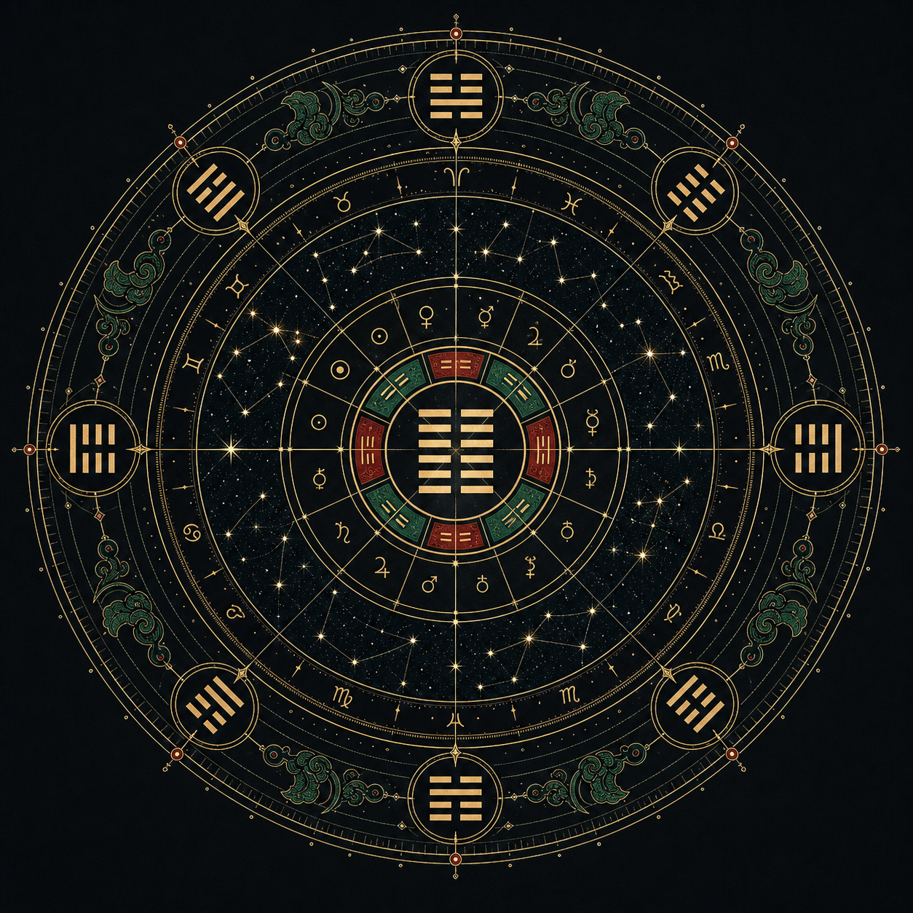

命主资料
出生信息与问事
计算盘
易经 × 吠陀 × 西占
本地规则引擎

本卦
乾为天
初爻、四爻动
起盘
1986-09-21 23:45
时区
UTC+8 · 广东省
今日值符
开门 · 震木
生成结果
深度报告
命盘呈现“智识开局、以动求成”的结构。此处会随输入自动生成合参判词。
本地规则已就绪。点击“合参推演”后会尝试调用 MiniMax 生成 AI 深盘。
原型用于文化娱乐与自我反思。MiniMax API key 只应配置在服务端环境变量中，不要放进前端代码。